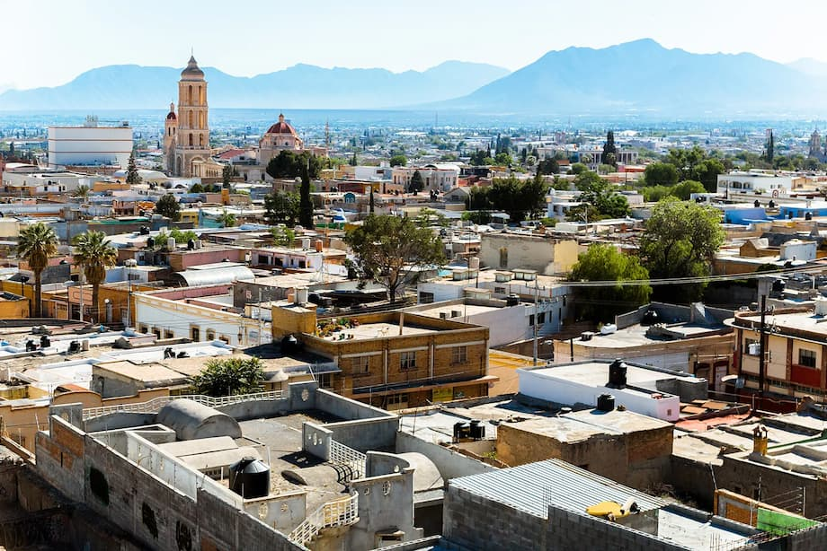

Josue Zenif Baez Gomez
About Me
My name is Josue Zenif Baez Gomez and I was born in Mexico, Saltillo Coahuila. I currently live in Quebec Canada and I speak Spanish, English and French. I am studying in BYU-Idaho Online for now and I plan to go on a mission this year 2026, in July or August. I am studying software development and I plan to get a Bachelors in that domain. I want to go study in person when I return from my mission, but for now I am advancing as much as I can and working to earn money for my studies and my future studies.
Saltillo, Mexico

Saltillo is a historic city in northern Coahuila, located about 90 kilometers west of Monterrey. Founded in 1577, it is known as one of the oldest cities in northern Mexico and serves as the state capital. Saltillo is famous for its colorful traditional sarapes, a type of woven blanket that represents an important part of the region’s culture. Today, the city combines its colonial history with modern industry, including automobile manufacturing, and plays an important role in the economy of northern Mexico. The city sits in a valley surrounded by mountains, which gives it a cooler climate than many other cities in northern Mexico. Saltillo has a rich colonial history that can still be seen in its historic buildings, churches, and plazas. Today, it is also an important industrial center, especially for automobile manufacturing, and it is home to major companies such as General Motors. With its mix of tradition, history, and modern development, Saltillo is an important cultural and economic hub in northern Mexico.